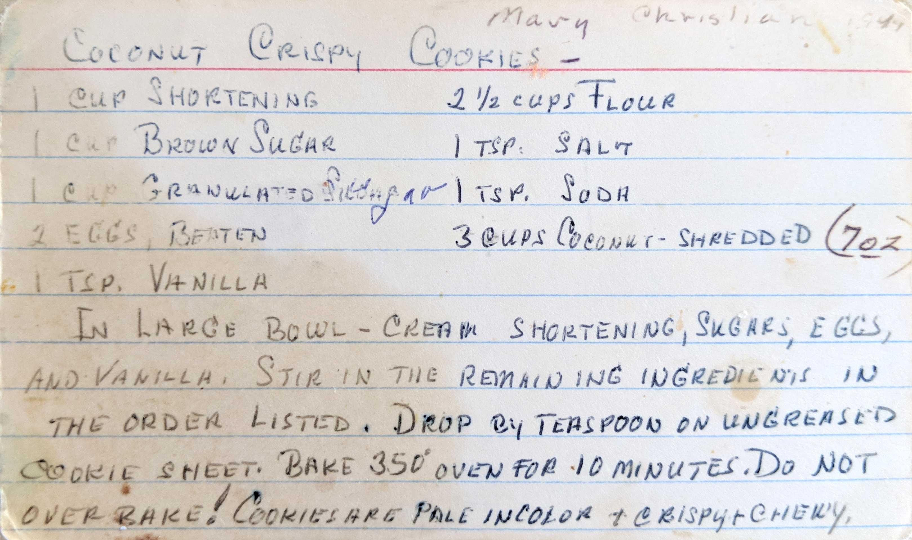

Coconut Crispy Cookies
1 Cup Shortening
1 Cup Brown Sugar
1 Cup Granulated Sugar
2 Eggs, Beaten
1 tsp. Vanilla
2 1/2 Cups Flour
1 tsp. Salt
1 tsp. Soda
3 Cups Coconut-Shredded (7oz)
In large bowl - cream shortening, sugars, eggs, and vanilla. Stir in the remaining ingredients in
the order listed. Drop by teaspoon on ungreased cookie sheet. Bake 350° oven for
10 minutes. Do not overbake! Cookies are pale in color + crispy + chewy.